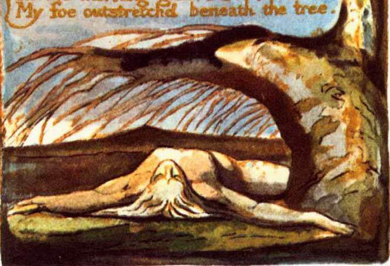

Kızmıştım arkadaşıma,
Söyledim öfkemi, dindi öfkem,
Kızmıştım düşmanıma,
Söylemedim öfkemi, büyüdü öfkem.
Ve korkularla suladım onu,
Gece gündüz gözyaşlarımla
Ve tebessümlerle güneşlendirdim,
Hilekâr tatlı cilvelerle.
Ve gece gündüz demeden büyüdü,
Sonunda bir elma verdi parlak
Ve düşmanım ışıdığını gördü,
Biliyordu ki, o benimdi.
Kutbun üstünü peçeyle örttüğünde gece,
Gizlice girdi bahçeme,
Sabah mutlulukla gördüm ki,
Düşmanım serilmiş ağacın dibine.
